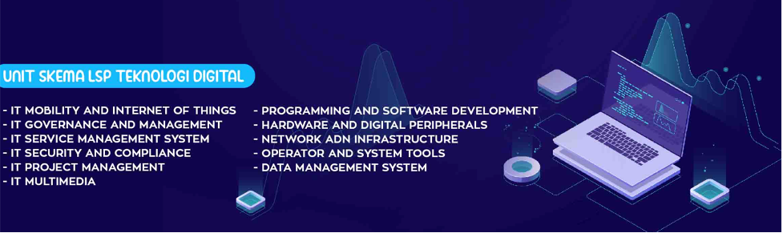

Sertifikasi Profesi? Gunanya Apa?
Dulu banyak yang tidak paham dan tidak tahu bahkan juga banyak yang peduli tentang arti penting sebuah sertifikasi profesi di Indonesia. Semua pekerja setelah lulus sekolah langsung mencari bidang pekerjaan yang sesuai dengan latar belakang pendidikannya. Ada juga yang berpindah jalur! Pendidikannya apa, tapi kerjanya jauh berbeda...
Memang tidak ada ketentuan khusus tentang hal ini, namun seiring dengan perkembangan zaman dan tantangan untuk berkompetisi di dunia kerja, keadaan ini menuntut para pencari kerja untuk lebih terampil dan terasah di dalam menghadapi persaingan dunia kerja yang semakin tidak mudah.
Di Indonesia dengan hadirnya BNSP (Badan Nasional Sertifikasi Profesi) jelas membuat sebuah peta persaingan pencari keja semakin jelas untuk meraih masa depan yang lebih baik. Pekerja akan diarahkan untuk memperoleh sebuah pengakuan nyata dari kompetensi profesi yang dijalaninya.
Untuk para pekerja di bidang digital marketing kini tidak perlu khawatir lagi, salah satu lembaga sertifikasi profesi yang telah berlisensi dari BNSP yaitu LSP Teknologi Digital hadirkan kelas-kelas pelatihan dan ujian kompetensi.
LSP Teknologi Digital melakukan proses sertfikasi di bidang Teknologi dan Informasi. Adapun tugas pokok serta fungsi dari lembaga sertifikasi sangat penting dalam pengembangan Sumber Daya Manusia (SDM), hal ini menjadikan LSP Teknologi Digital harus lebih profesional dan independentdalam melakukan proses sertifikasi. Untuk memastikan tenaga kerja Indonesia berkompeten pada bidangnya dan berdaya saing global pada industri teknologi dan informasi.
Untuk mendapatkan informasi lebih lanjut seputar unit skema LSP Teknologi Digital, silakan hubungi LSP Teknologi Digital di kotamu! Kami telah hadir di Jakarta, Yogyakara dan Bogor.
Jakarta : Jl. Pulo Gebang Indah Raya Blok k6 No.10B, Pulo Gebang ,Jakarta Timur, Daerah Khusus Ibukota Jakarta 13950
Yogyakarta : Jalan Demangan Baru No. 8, Catur Tunggal, Depok, Demangan Baru, DIY
Bogor : Pusat Inovasi LIPI Tenant A3, Cibinong, 0817 401157
Catat juga no WA Kami ya di 085329489247 082122064698 dan 081213355783 atau bisa juga email di info@lspdigital.id


Paham Digital Marketing? Blom Punya Sertifikasi Profesi ?
Nah, buat kalian yang sehari-harinya berkutat dengan dunia digital marketing, pastinya sudah oke banget ilmunya! Sekarang saat yang pas untuk membuatnya lebih memperkaya jurus kalian dengan memiliki sertifikasi profesi digital marketing.
Caranya mudah kok, tinggal daftarkan diri kalian di LSP Teknologi Digital yang merupakan Lembaga Sertifikasi Profesi yang hadirkan kelas-kelas pelatihan dan ujian kompetensi. Kalian akan dibimbing untuk mengikuti ujian kompetensi dari BNSP (Badan Nasional Sertifkasi Profesi).
Segera hubungi Kami di kota kalian ya!
Jakarta : Jl. Pulo Gebang Indah Raya Blok k6 No.10B, Pulo Gebang ,Jakarta Timur, Daerah Khusus Ibukota Jakarta 13950
Yogyakarta : Jalan Demangan Baru No. 8, Catur Tunggal, Depok, Demangan Baru, DIY
Bogor : Pusat Inovasi LIPI Tenant A3, Cibinong, 0817 401157
Catat juga no WA Kami ya di 085329489247 082122064698 dan 081213355783 atau bisa juga email di info@lspdigital.id

Persaingan Makin Keras, Sertifikasi Profesi Solusinya!
Ayo, siapkan diri kalian dalam menghadapi persaingan dunia kerja yang makin kompetitif.
Yang jago banyak, yang punya sertifikasi profesi masih sedikit. Kini saatnya kalian lengkapi kemampuan kalian. Caranya mudah, segera hubungiLSP Teknologi Digital yang merupakan Lembaga Sertifikasi Profesiyang hadirkan kelas-kelas pelatihan dan ujian kompetensi. Kalian akan dibimbing untuk mengikuti ujian kompetensi dari BNSP (Badan Nasional Sertifkasi Profesi).
Segera hubungi Kami di kota kalian ya!
Jakarta : Jl. Pulo Gebang Indah Raya Blok k6 No.10B, Pulo Gebang ,Jakarta Timur, Daerah Khusus Ibukota Jakarta 13950
Yogyakarta : Jalan Demangan Baru No. 8, Catur Tunggal, Depok, Demangan Baru, DIY
Bogor : Pusat Inovasi LIPI Tenant A3, Cibinong, 0817 401157
Catat juga no WA Kami ya di 085329489247 082122064698 dan 081213355783 atau bisa juga email di info@lspdigital.id